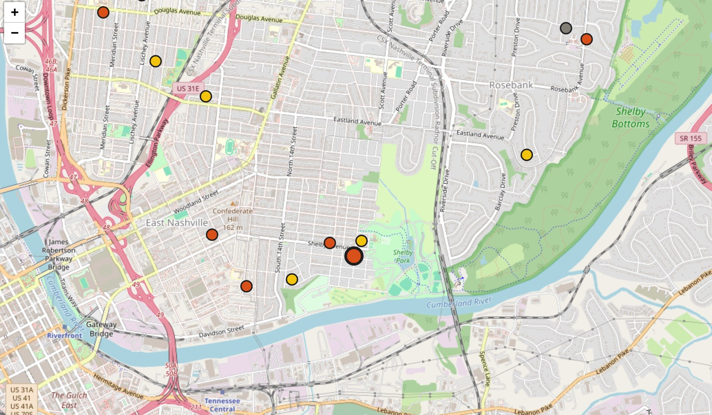
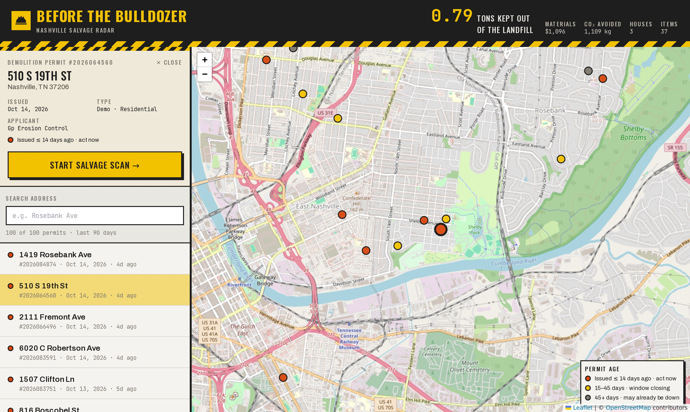
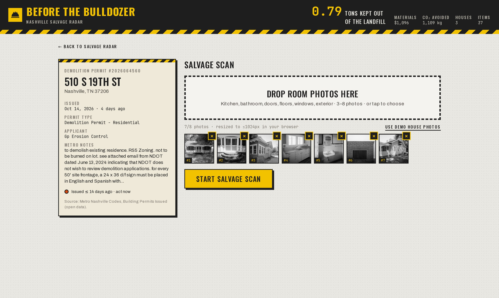
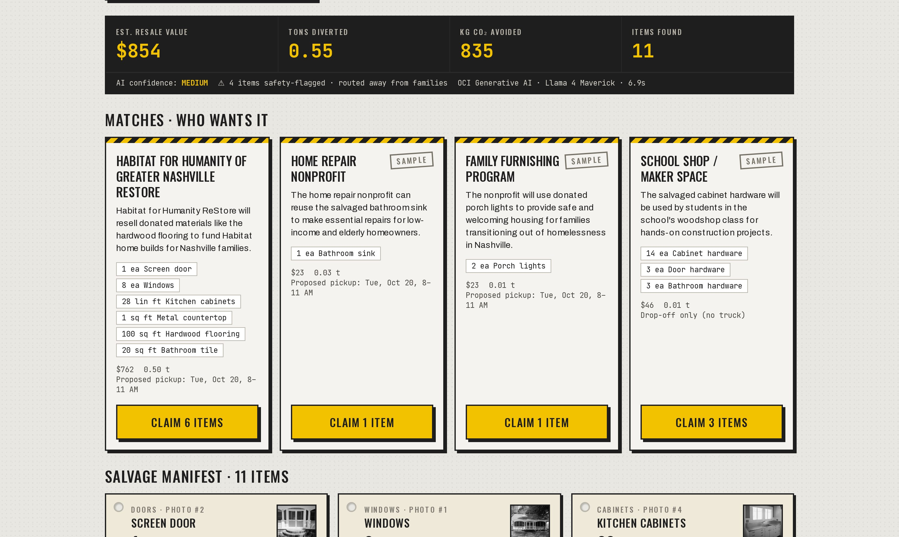

Every dot on this map is a Nashville house being torn down. We look inside before the bulldozer does.

Map data © OpenStreetMap contributorsConstruction and demolition debris is a fast-growing waste stream, and almost none of it is reused.
Metro's proposed C&D ordinance excludes single-family homes and townhomes of 4 units or fewer. Nobody inventories the house before it comes down, so doors, cabinets, floors and fixtures go straight into the dumpster.
We asked: what happens to the stuff inside a teardown? What stops anyone from saving it? Would a salvage list plus a nonprofit pickup change that?
“Add the exact quote from the call here.”
“Add the exact quote from the call here.”
“Add the exact quote from the call here.”
Real Nashville demolition permits from Metro open data, colored by how recently they were issued.

Kitchen, bath, doors, windows, exterior. Photos shrink in the browser before upload.

Items, condition, safety flags, value and tons, each routed to one nonprofit. Claim, and the citywide counter ticks up.

Residential demolition permits, ingested by script
API routes · zod validation
JSON retry · 30 s fallback
rules engine · lookup table
Llama 4 Maverick (vision)
photos → salvage manifest
us-chicago-1 · on-demand
Habitat ReStore + partners
claim → pickup window
Llama 4 identifies what's visible: item, quantity, condition, safety flags. It never invents a price.
Every number is traceable to a per-category lookup.
value = $/unit × qty × condition
weight = lb/unit × qty
Each item goes to exactly one nonprofit. Possible lead paint or asbestos never goes to families; a licensed pro assesses it.
11 items routed to 4 nonprofits. Conservative: only what is visible in seven photos.
Illustrative: 647 residential demolition permits (last 12 months) × the demo house.
Look inside before the bulldozer does.
It's a starting inventory a human confirms on site. We show AI confidence and never auto-dispatch a truck.
Pre-1980 painted wood and old tile get flagged and routed away from families. Abatement needs a licensed pro.
Tipping fees: every ton not dumped is money saved, plus possible tax-deductible donation receipts.
Permits are already public. Any city with open permit data can turn each new demolition into a salvage opportunity.
OCI Generative AI (Llama 4 Maverick) for vision and text, OCI Compute hosting, Autonomous Database as the production store.
Permits are real Metro data and Habitat ReStore is real. Three partner nonprofits are labeled samples; prices are estimates to verify.